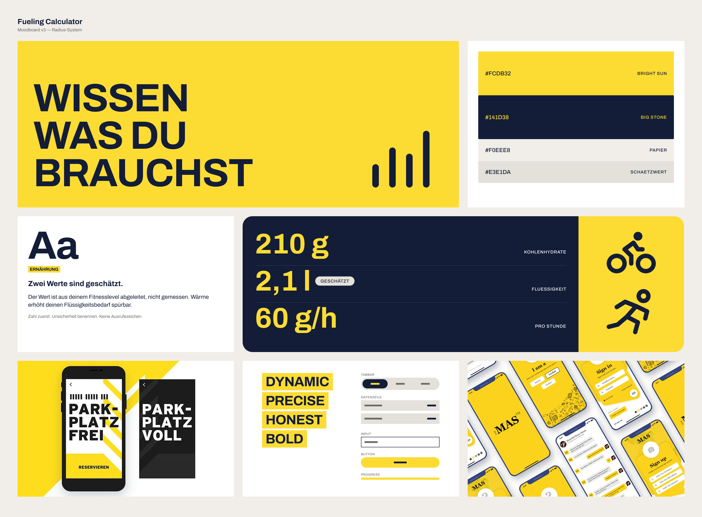
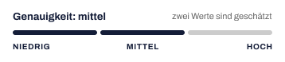
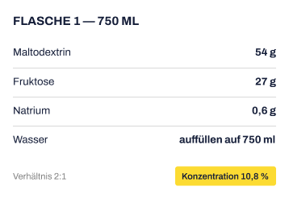

Figma, Figma Slides und Miro, KI-Werkzeuge siehe Kapitel 07
Für eine Einheit von 3:30 h zeigt die App, wie viele Kohlenhydrate und wie viel Flüssigkeit nötig sind und was konkret eingepackt werden muss.
Auf einen Blick
Problem
Auf langen Einheiten muss man unterwegs Kohlenhydrate zuführen, das nennt sich Fueling. Die Zielwerte kennen viele, aber die Übersetzung auf den konkreten Tag fehlt: 10 von 11 Befragten hatten im letzten Jahr trotz Vorbereitung einen Leistungseinbruch oder Magenprobleme.
Lösung
Ein markenneutraler Planer, der aus Dauer, Wetter und dem eigenen Vorrat in wenigen Minuten eine Packliste macht: was in welche Flasche und welche Tasche kommt.
Wichtigste Erkenntnis
Transparenz schafft Vertrauen, aber nur dosiert. Im Test kosteten zu viele Kennzeichnungen die Übersicht.
Ideation mit drei Ideen, Wettbewerbsanalyse, Customer Journey, User Story Map, KPIs
3Struktur
Sitemap, User Flows, Wireframes, Mid-Fi-Prototyp
4Test und Hi-Fi
Usability-Test, Iteration, Style Tile, Hi-Fi-Prototyp in Figma
01Das Problem
Die Zielwerte sind bekannt. Der Plan für den Tag fehlt.
Was ist Fueling?
Der Körper hat ausreichend Energiespeicher für etwa 90 Minuten.
Speicher leer!
Körpereigener Speicher (reicht für ca. 90 Min.)
Erforderliche Zufuhr von außen (Gels / Drinks)
0:001:30 h3:30 h
Bei langen Ausdauereinheiten verbraucht der Körper vor allem Kohlenhydrate. Seine eigenen Speicher reichen bei höherer Intensität nur etwa anderthalb Stunden. Wer länger unterwegs ist, muss unterwegs nachlegen: typischerweise 60 bis 90 Gramm Kohlenhydrate pro Stunde, über Getränke, Gels, Riegel oder ganz normale Lebensmittel wie Bananen. Dieses gezielte Nachtanken heißt Fueling. Wer zu wenig aufnimmt, bricht ein. Wer zu viel oder das Falsche aufnimmt, bekommt Magenprobleme.
Warum es in der Praxis schwierig wird
Die Zielwerte kennen ambitionierte Hobby-Ausdauersportler:innen meist. Schwierig wird es, wenn daraus ein Plan für eine konkrete Einheit werden soll. Hitze, Intensität und Dauer verändern den Bedarf, und statt teurer Markenprodukte landen oft Supermarktartikel oder selbst gemischte Getränke im Gepäck, deren Kohlenhydratgehalt niemand im Kopf hat.
Erkenntnis
Das Problem ist nicht fehlendes Wissen. Sondern die Übersetzung in die Praxis.
6 von 11Befragten verfolgen ein festes Gramm-Ziel pro Stunde.
1 von 11fühlt sich sicher, diese Menge in den eigenen Snacks zu bestimmen.
Bewusst als absolute Zahlen, weil die Stichprobe klein ist. Das Muster deckt sich mit der Forschung: Das Wissen um die Empfehlung sagt nicht vorher, wie viel im Wettkampf tatsächlich gegessen wird (Sampson et al., European Journal of Sport Science, 2024).
„Das Wissen hab ich eigentlich. Aber das Übertragen auf den ganz konkreten Tag mit Hitze und Intensität ist das Wackelige, da rät man dann oft nur noch.“
Warum bestehende Tools das nicht lösen
Fueling-Rechner gibt es bereits, doch fast alle stammen von Herstellern von Sportnahrung. Sie planen überwiegend mit eigenen Produkten, und aus groben Selbsteinschätzungen werden exakte Werte, die im Ergebnis nicht mehr als Schätzung erkennbar sind. Nutzer:innen bleibt die Frage, ob die Empfehlung ihnen dient oder dem Verkauf.
Erkenntnis
Ein Plan hilft nur, wenn man ihm vertraut. Und Vertrauen entsteht durch Nachvollziehbarkeit.
02Fokus
Für wen ist die Lücke am größten?
In der Research zeigten sich zwei Gruppen. Die eine kennt ihre Zielwerte, scheitert aber daran, sie an wechselnde Bedingungen wie Hitze oder hohe Intensität anzupassen. Die andere will teure Markenprodukte durch Supermarktartikel ersetzen, findet dafür aber keine verlässlichen Angaben. Ich habe mich auf die erste Gruppe konzentriert, weil dort die Unsicherheit am größten war: 6 von 11 Befragten fühlen sich vor langen Einheiten gestresst oder verunsichert, und selbst erfahrene Interviewpartner:innen gaben zu, bei Hitze oft nur zu raten. Das Bedürfnis der zweiten Gruppe verschwindet dabei nicht, es fließt in die Lösung ein: Die App rechnet auch mit Produkten aus dem Supermarkt.
Persona
Joshua, Rennrad- und Gravelfahrer
Joshua fährt ambitioniert Rennrad und Gravel, trainiert 7 bis 12 Stunden pro Woche und kennt seinen Zielwert. Trotzdem bleibt er vor langen Ausfahrten bei seiner Standard-Routine, weil ihm ein System fehlt, das sie an den Tag anpasst.
Bedürfnis 1
Vor der Fahrt keine Rechnungen im Kopf machen.
Bedürfnis 2
Sich darauf verlassen können, dass die Verpflegung reicht.
Der Fokusmoment
Der Fokusmoment ist die Planung vor einer langen Radausfahrt. Rad steht stellvertretend für den Ausdauersport: Hier hatte ich den besten Zugang zu Testpersonen, und die Planung vereint viele Variablen auf einmal, nämlich lange Dauer, mehrere Flaschen und begrenzten Platz in den Trikottaschen.
How-might-we-Frage
Wie können wir Joshua bei der Planung vor langen Einheiten unterstützen, sein Wissen in die Praxis umzusetzen und Unsicherheit zu reduzieren?
Mit dieser Frage als Anker begann die Ideation. Die erste Entscheidung ergab sich direkt aus dem Vertrauens-Insight: Die App muss markenneutral sein.
03Lösung und MVP
Drei Entscheidungen, jede aus einem Insight
Lösungsidee
Aus einer offenen Rechenaufgabe wird eine fertige Ansage.
Insight: Übersetzungsproblem
1Ein Plan für genau diesen Tag
Das Übersetzungsproblem entsteht, weil jede Einheit anders ist. Die App fragt deshalb nur ab, was sich von Fahrt zu Fahrt ändert: Dauer, Intensität und Wetter. Körperdaten, Verträglichkeit und der eigene Produktvorrat sind im Profil hinterlegt, so dauert die Planung nur wenige Minuten. Das Ergebnis ist keine abstrakte Gramm-Zahl, sondern eine konkrete Ansage, was in welche Flasche und welche Trikottasche kommt.
Insight: Hersteller-Rechner
2Markenneutral
Weil bestehende Rechner von Herstellern stammen, rechnet die App ausschließlich mit dem, was Nutzer:innen selbst besitzen, vom Gel bis zur Supermarkt-Banane.
Insight: Scheingenauigkeit
3Nachvollziehbar statt scheingenau
Jede Zahl im Plan lässt sich herleiten. Geschätzte Werte sind als Schätzung erkennbar und sehen nicht aus wie Messwerte.
Was bewusst nicht ins MVP kam
Entscheidung
Der Tour-Übersetzer: ein situativer Rechner, der für genau eine Fahrt eine Packliste erstellt.
Zurückgestellt
Ein Strategie-Baukasten mit gespeicherten Plänen für wiederkehrende Szenarien und ein Erfahrungs-Logbuch zur Auswertung nach der Fahrt.
Warum
Beide Ideen sind denkbar, ich habe sie fürs MVP aber bewusst zurückgestellt, um mich auf den Moment vor der Fahrt zu konzentrieren.
Das Ziel: Nutzer:innen verlassen das Haus mit einer begründeten statt geratenen Menge und packen einfach nach Liste. Die drei Entscheidungen prägen jeden Schritt der App. Am deutlichsten werden sie im Kern-Flow, vom Start bis zum fertigen Plan.
04Kern-Flow
Vom Start bis zum fertigen Plan in wenigen Minuten
Joshua will gleich eine Runde von dreieinhalb Stunden fahren. Profil und Vorrat sind gespeichert, er gibt nur ein, was diese Tour betrifft. Die Screens zeigen den finalen Stand, in den die Änderungen aus dem Test bereits eingeflossen sind.
Bedingungen. Die App fragt nur ab, was sich von Fahrt zu Fahrt ändert. Das Wetter wird automatisch übernommen.
Vorrat wählen. Sportprodukte und Supermarktartikel stehen gleichberechtigt nebeneinander. Geplant wird nur mit dem, was da ist.
Plan-Übersicht. Die fertige Ansage: Zielmenge pro Stunde, Gesamtmenge und ein Rhythmus für unterwegs.
Packliste. Aus Gramm werden Handgriffe. Jede Position lässt sich beim Packen abhaken.
Herleitung. Jede Zahl ist nachvollziehbar. Geschätzte Werte sind antippbare Pills und zeigen ihre Herkunft im Bottom Sheet.
Maßgeblich geprägt hat diesen Flow ein Usability-Test. Seine Leitfrage: Wird der Plan verstanden oder nur angezeigt?
05Test und Iteration
Wird der Plan verstanden oder nur angezeigt?
Der Test
Getestet habe ich den Mid-Fidelity-Prototyp mit vier Personen und einem realistischen Szenario: eine Rennradrunde von gut dreieinhalb Stunden, Profil und Vorrat bereits angelegt, das Getränk diesmal selbst gemischt. Die Testpersonen sollten einen Plan erstellen, erklären, was sie einpacken, und herausfinden, wie die App auf ihren Wert kommt.
Was funktionierte
Der Wizard wurde ohne Hilfe abgeschlossen, und die Packliste wurde sofort als Handlungsanweisung gelesen. Das Grundkonzept trägt also.
Der Wendepunkt
Befund
Beim Vertrauen zeigte sich etwas anderes. Vorbelegte Werte ohne sichtbare Herkunft erzeugten Misstrauen, und geschätzte Werte waren im Wizard nicht als solche erkennbar.
Verworfen
Noch mehr kennzeichnen. Das wäre die naheliegende Antwort gewesen, aber schon im Plan zeigte sich, dass die vielen Labels die Übersicht kosten.
Entscheidung
Statt jeden Wert zu kommentieren, trägt ein geschätzter Wert sein Signal jetzt selbst: Er wird zur antippbaren Pill, die Zahl bekommt ein ≈. Eine Zeile oben fasst zusammen, wie genau der Plan ist und wie viele Werte geschätzt sind. Wer mehr wissen will, tippt auf den Wert und sieht im Bottom Sheet, woher er kommt, was er am Plan verändert und wie man ihn anpassen kann. Die Gramm-Angaben bleiben immer sichtbar. Zu sehen ist das im Screen Herleitung im Kern-Flow.
Erkenntnis
Transparenz schafft Vertrauen, aber nur, solange sie die Übersicht nicht frisst.
Vorher und nachher. Links der getestete Stand mit einem Label an jedem geschätzten Wert. In der Mitte trägt der Wert sein Signal selbst als antippbare Pill. Rechts das Bottom Sheet: woher der Wert kommt, was er am Plan verändert und wie man ihn anpasst.
Weitere Änderungen
Außerdem wurden Ort und Startzeit als änderbar gekennzeichnet, die Wahl zwischen Fertigpulver und Eigenmischung ergänzt und der GPX-Upload als eigene Karte vor die Eingabefelder gezogen.
Ob die dosierte Transparenz das Vertrauen tatsächlich stärkt, lässt sich messen. Genau daran setzt der nächste Schritt an.
06Impact und Learnings
Woran sich der Erfolg messen lässt
Erfolgskriterium
Der Plan funktioniert, wenn Nutzer:innen ihm mehr vertrauen als ihrer eigenen Schätzung.
Das lässt sich messen. Der Trust Score beobachtet, ob Nutzer:innen die Herleitung öffnen und den Plan danach übernehmen, statt ihn anzupassen oder zu verwerfen. Wer nachschaut und trotzdem übernimmt, hat die Rechnung geprüft und für plausibel befunden. Genau dieses Verhalten soll die App erzeugen.
Ziel-KPI
≥ 85 %
Wizard-Conversion bei wiederholter Nutzung
Ziel-KPI
≥ 50 %
der Pläne am Tag der Einheit geöffnet
Ziel-KPI
≥ 70 %
Trust Score: sicher mit der empfohlenen Menge
Zielwerte für den Live-Betrieb, im Projekt definiert und nicht gemessen.
Nächster Schritt: Aus Schätzungen werden Erfahrungswerte
Viele Werte im Plan sind heute noch Schätzungen, etwa Schweißrate oder Leistung. Der nächste Schritt ist deshalb ein kurzes Feedback nach der Fahrt: Hat die Verpflegung gereicht, gab es Magenprobleme? Mit jeder Fahrt kann die App ihre Schätzungen an die echte Person anpassen. Was heute noch mit ≈ markiert ist, wird mit der Zeit zum Erfahrungswert.
Vor einer echten Umsetzung würde ich die Berechnungslogik außerdem von ernährungswissenschaftlichen Fachleuten prüfen lassen. Für ein hypothetisches Projekt war das nicht nötig, für ein Produkt, dem Menschen vertrauen sollen, schon.
Offene Produktfrage
Offen bleibt, wie sich ein neutrales Tool finanziert. Affiliate-Links oder Partnerschaften mit Herstellern lägen nahe, würden aber genau die Neutralität untergraben, auf der das Vertrauen aufbaut.
Was ich mitnehme
Transparenz braucht Dosierung
Mehr Information erzeugt nicht automatisch mehr Vertrauen. Entscheidend ist, was sofort sichtbar ist und was erst auf Nachfrage erscheint.
Fokus auf einen Moment
Die Beschränkung auf die Planung vor der Fahrt hat das MVP erst möglich gemacht.
07KI im Prozess
KI hat beschleunigt, die Entscheidungen blieben bei mir
Tool
Einsatz
Ergebnis
Perplexity
Desk Research
Studien mit prüfbaren Quellen
NotebookLM
Interviews und Umfrage auswerten
Jede Erkenntnis bis zur Quelle rückverfolgbar
Claude
Sparring im gesamten Projekt
Geschärfte Hypothesen und Entscheidungen
Claude, Google Stitch, Figma Make, Figma Agent
Frühe Screen-Ideen
Mehrere Richtungen in kurzer Zeit
Studien aus Perplexity habe ich selbst an der Quelle geprüft, die Auswertung von NotebookLM bis zur Originalaussage zurückverfolgt und danach selbst interpretiert und geclustert. Das finale Design ist in Figma entstanden.
08Designsystem der App
Wenige Regeln, jede mit einem Grund
Auch das Designsystem folgt dem Vertrauens-Insight: Man sieht auf einen Blick, was geschätzt ist und was man antippen kann.
Ausgangspunkt: das Moodboard
Bevor es Regeln gab, habe ich im Moodboard die visuelle Richtung gesucht: Farben, Typografie, Markenwerte und erste Komponenten, ergänzt um Referenzen anderer Apps. Es ist eine Ideensammlung, noch nicht das Designsystem. Die Regeln weiter unten sind daraus entstanden und haben sich im Test weiterentwickelt.

Moodboard v3. Das graue Schätzwert-Feld wurde später durch die gelbe Pill ersetzt.
Die Regeln
Farben mit Aufgabe
Tinte gibt Struktur, Gelb hebt hervor: das Ergebnis und alles, was man antippen kann.
Radius nach Interaktion
Radius 0 für alles, was man liest; voll gerundet für alles, was man antippt. So erkennt man ohne Nachdenken, was interaktiv ist.
Zwei Signale
Ein ≈ vor der Zahl heißt „geschätzt“. Die gelbe Pill mit Pfeil heißt „antippen und anpassen“. So bleibt eine Schätzung als Schätzung erkennbar, ohne dass jeder Wert einen Hinweis braucht.
Typografie
Archivo Expanded Bold für Zahlen und Überschriften, Archivo für Text.


Ausschnitte aus dem Designsystem. Was man antippt, ist voll gerundet: Tabs und Buttons. Was man liest, bleibt flach: Datenzeilen und Karten. Gelb hebt hervor, was zählt, etwa die Gesamtmenge. Das Designsystem ist noch nicht final.
Kontakt
Sprechen wir darüber
Ich bin Moritz, UX/UI- und Product Designer aus Kiel. Wenn du über den Fueling Calculator oder eine offene Stelle sprechen möchtest, schreib mir.